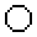
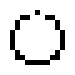
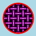
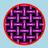
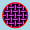

ImageMagick Examples --
 Anti-Aliasing
Anti-Aliasing
- Index
-
 ImageMagick Examples Preface and Index
ImageMagick Examples Preface and Index
-
 Anti-Aliasing Introduction
Anti-Aliasing Introduction
-
Drawing with only Specific Colors
-
Drawing Thin Bitmapped Circles
-
Anti-Aliasing and Flood Fill Problems
Anti-Aliasing Introduction
ImageMagick when it draws images, does so in a very particular way. It draws them with an operation call "anti-aliasing". To demonstrate, I'll draw an image on a transparent background, then magnify a small part of the image so you can see what is happening.
magick -size 80x80 xc:none \
-fill white -draw "circle 40,40 15,20" \
-fill black -draw "line 5,30 78,2" drawn.png
magick drawn.png -crop 10x10+50+5 +repage -scale 80x80 drawn_mag.png
|
![[IM Output]](drawn.png)
![[IM Output]](drawn_mag.png)
+antialias".
magick -size 80x80 xc:none +antialias \
-fill white -draw "circle 40,40 15,20" \
-fill black -draw "line 5,30 78,2" drawn_jaggies.png
magick drawn_jaggies.png -crop 10x10+50+5 +repage -scale 80x80 \
drawn_jaggies_mag.png
|
![[IM Output]](drawn_jaggies_mag.png)
Summary
Anti-Aliasing is very important in any sort of image drawing, and something you should keep in mind. Without consideration of the mixed colors and semi-transparent pixels generated by IM anti-aliasing, your own image creations can come out looking very bad in some formats. This becomes even more important when you are creating images in an image format which does not allow semi-transparent pixels, such as the wide spread "GIF" format. See GIF Boolean Transparency for ways to handle this problem. IM is very good at anti-aliasing colors and transparencies, but actually very poor at drawing just pure 'aliased' pixels (to match a specific color map for example). I have been told that this will be the focus of a later release of IM.Drawing Using Only Specific Colors

Drawing Thin Bitmapped Circles
Here we look at trying to draw bitmaped 'thin lined' circles using IM. Normally this is done using a bitmap circle drawing algrothm typically known as Bresenham's circle algorithm, but more correctly known as Midpoint Circle Algorithm. Unfortunatally this is not available in ImageMagick, and may never be as it is not needed in a fully anti-aliased drawing environment. Another alternative to drawing circles, which well look at in a moment, is to use Morphology, to 'Dilate' a single pixel, using the special Ring Kernel.For example the normal IM way of drawing a circle produces a lot of grey anti-aliasing colors to give the circle a smooth appearance.
|
![[IM Output]](circle_antialiased.gif)
|
|
-strokewidth" , which defaults to 1 pixel wide, to something smaller, such as 0.5 pixels wide.
|
![[IM Output]](circle_thin_stroke.gif)
|
|
|
 |
-strokewidth" that works for all radii and centers. Especally a circle that is slightly off center.
There is no ideal solution for all situations
For example this circle which is not centered on a pixel, or a pixel boundary, not only has gaps at the top, but is also too thick at the bottom! Yuck!
|
 |
-strokewidth", to generate a thin single pixel wide circle of specific radius. Note that the best value to use varies depending on if the circle is centered either on an actual pixel (such as ' 5 , 5 '), or on a half pixel boundry (such as ' 5.5 , 5.5 ')
| Circle Radius | SW Actual | SW half |
|---|---|---|
| 1 | 0.3 | 0.3 ¶ |
| 1.5 | 0.5 ¶ | 0.3 |
| 2 | 0.3 | 0.3 § |
| 2.5 | 0.5 ¶ | 0.3 ¤ |
| 3 | 0.3 ¤ | 0.3 |
| 3.5 | 0.5 | 0.3 ¤ |
| 4 | 0.5 § | 0.3 |
| 4.5 | 0.5 | 0.3 |
| 5 | 0.4 | 0.3 |
| 5.5 | 0.5 ¶ | 0.3 |
| 6 | 0.3 | 0.5 § |
| 6.5 | 0.5 | 0.43 |
| 7 | 0.5 | 0.434 |
| 7.5 | 0.5 § | 0.5 § |
| 8 | 0.4 | 0.5 |
| ¤ Very good small circle | ||
| § no ideal width found | ||
| ¶ circle is very bad | ||
Anti-Aliasing and Flood Fill Problems
Due to anti-aliasing features of IM, flood-filling ("-draw color floodfill") has problems when used on images with anti-aliasing effects. It also has similar problems with images read in from the "JPG" image format. Basically as most objects in IM are anti-aliased (or read from a "JPG" format image file), colors near the edges of drawn objects are rarely the specific color that you are using flood fill to replace. This means the flood fill will not fill the very edges of the areas you are trying to fill, unless you are avoiding anti-aliasing entirely. Essentially flood fill, or even color replace, does not understand anti-aliasing, nor does it use anti-aliasing techniques itself. Consequently flood fill will generally miss the pixels at the very edge of the area you are filling. For example, Here we do a typical flood fill operation. Draw a circle, then try to fill it with a pattern...
![[IM Output]](tile_fill_1.gif)
{kind=link}
{kind=link}
{kind=link}
{kind=link}
{kind=link}
{kind=link}
|
 ![[IM Output]](tile_fill_2_mag.gif)
|
{kind=link}
|
 ![[IM Output]](tile_fill_3_mag.gif)
|
{kind=link}
| Note that a high 'fuzz factor', like this, or the border that is too thin, can result in the fill pattern 'leaking' from the defined area. Some care is always needed when using a flood-fill operation. I don't actually recommend it as a general solution, because of this. |
|
![[IM Output]](tile_fill_4.gif) ![[IM Output]](tile_fill_4_mag.gif)
|
|
 ![[IM Output]](tile_fill_5_mag.gif)
|
{kind=link}
FUTURE: anti-aliasing issues on pre-exsiting images (especially JPG format). For Example Recoloring and overlaying text or diagram image onto a color or background. Also re-adding transparency to GIF files, and rescaled JPEGs for icon use. Smoothing or anti-alising images with limited color set Specifically bitmap (pure black and white) images. First anti-aliasing does not work on bitmap images. Anti-aliasing involves using a mix of colors and transparences to try and smooth the 'stair case' or 'jaggies' effect of slanted lines and color boundaries. If only two colors are available no anti-aliasing can NOT happen! The image must be converted from B&W or grey scale at the minimum before anti-aliasing can be used. A simple way to smooth edges is to use a small amount of blur after reading in a B&W image or an image with a tiny pallette size. EG: magick image.xbm -blur 0x.3 smoothed_image.png